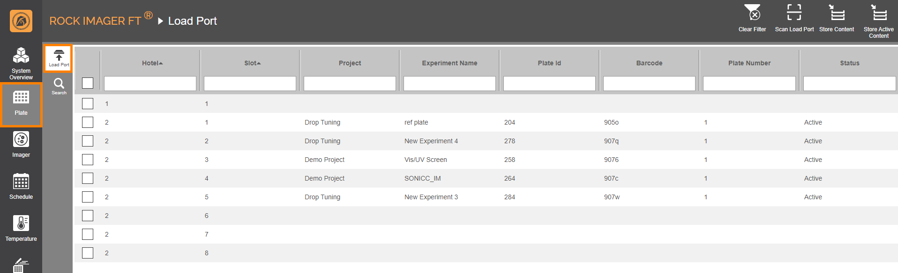

Adding and Removing Plates¶
This section explains how to properly add plates to the ROCK IMAGER FT and how to remove them safely.
Jump to:
Adding Plates¶
Prerequisites:
You have created an experiment in ROCK MAKER. If you aren’t interested in tracking conditions with ROCK MAKER, you can create a proxy experiment to expedite the imaging process.
Your plate has a barcode label affixed to the short side of the plate opposite the A1 position. See image below for reference.
{kind=link}
A Barcode Label Is Properly Attached to the Short Side of the Plate
To add a plate to ROCK IMAGER FT:
Open the Load Port door.
Place the plates into the available Load Port slots. Plates should be inserted with the barcode facing away from you. Plates can be inserted into any slot, in any order.
Close the Load Port door with a gentle nudge. When the door is properly closed, the Load Port Door in the Status Bar will say Closed. At this point, the system will scan the new plates. If it’s successful, the plate information will appear in the Load Port tab of the Plate menu and the Status column will say Active.
Monitoring the Load Port Door Status through the Software
New Plates Added to the Load Port Tab
{kind=link}
{kind=link}
Moving Plates¶
Now that you have plates inside the Load Port of the ROCK IMAGER FT, you can do the following options:
- Move all plates to Storage
Click Store Content in the upper-right corner of the screen. Moving plates to Storage is recommended to preserve your samples as it has a greater temperature control. To move specific plates to Storage, check the boxes next to the desired plates. Then, click Move Plate To and select Storage.
Tip
Click Store Active Content if there are expired plates in the Load Port that haven’t been removed from the system. This will tell ROCK IMAGER FT to store only plates that have on-going imaging schedules (the Status column says Active).
- Move a plate to an Imager
You can move a plate to an Imager to check on your crystal growth at any time using the system’s powerful optics. To do so, select the plate of interest and click Move Plate To. Then, select Vis-UV Imager. Read Viewing A Plate’s Content for more information.
Note
If your plate is in the Storage, go to the Search tab and perform a plate search. When you find it, select it until the command panel appears. click Move Plate To and select Vis-UV Imager.
- Initiate an Imaging session
If you want ROCK IMAGER FT to image a plate immediately, so you can view, score, and annotate those images in ROCK MAKER, select the desired plate. Then, click Image Now. Read, Initiating an On-Demand Imaging Session for more information.
Removing Plates¶
Warning
Do NOT attempt to physically reach inside the ROCK IMAGER FT to remove a plate from anywhere other than the Load Port.
When all of the imaging schedules for a certain plate have been completed, you can remove the plate from Storage. Multiple plates can be moved at the same time from Storage to the Load Port, where you can then safely take them out to be stored outside ROCK IMAGER FT.
Note
Follow the tutorial below to learn how to safely remove a plate.
Tip
You can look at the Status column and search for plates with Expired status to find out which plates need to be removed from the system. When a plate has Expired status, that means all its imaging schedules have been completed.
{kind=link}
Expired Plates that Need to be Removed from Storage
Prerequisite:
You have an empty slot(s) in the Load Port. For example, if 5 plates are to be moved from Storage, there must be 5 empty slots in the Load Port. To make room, you can either move the plates in the Load Port to Storage or take them out, as needed.
To remove a plate from ROCK IMAGER FT:
In the Search tab of the Plate menu, select the plate(s) of interest. To move multiple plates at once, check the checkboxes next to each of the desired plates.
In the command panel that appears, click Move Plate To and select Load Port Hotel. Wait for a few moments while ROCK IMAGER FT moves the plates from Storage to Load Port. Click the Load Port tab and the plates should be there now.
Open the Load Port door. Remove the plates from it and close the door.